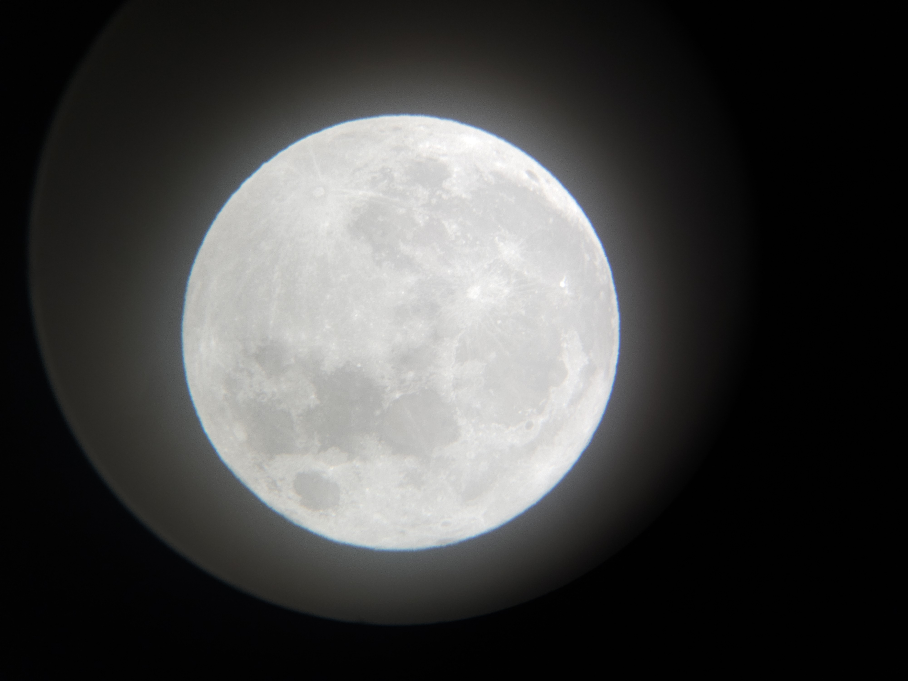
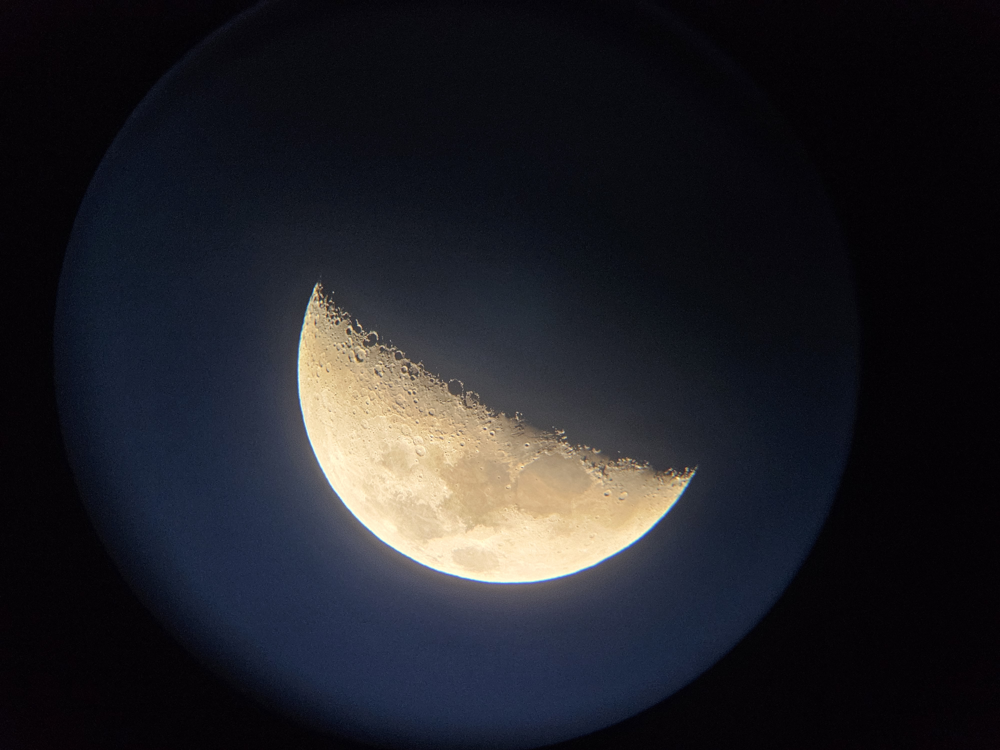
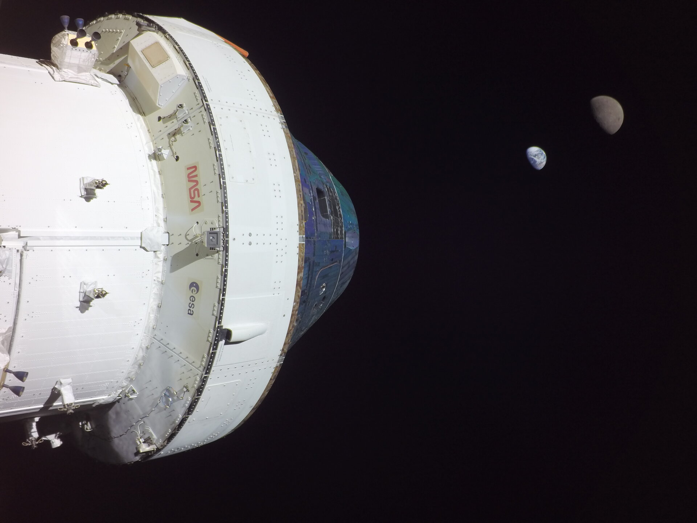
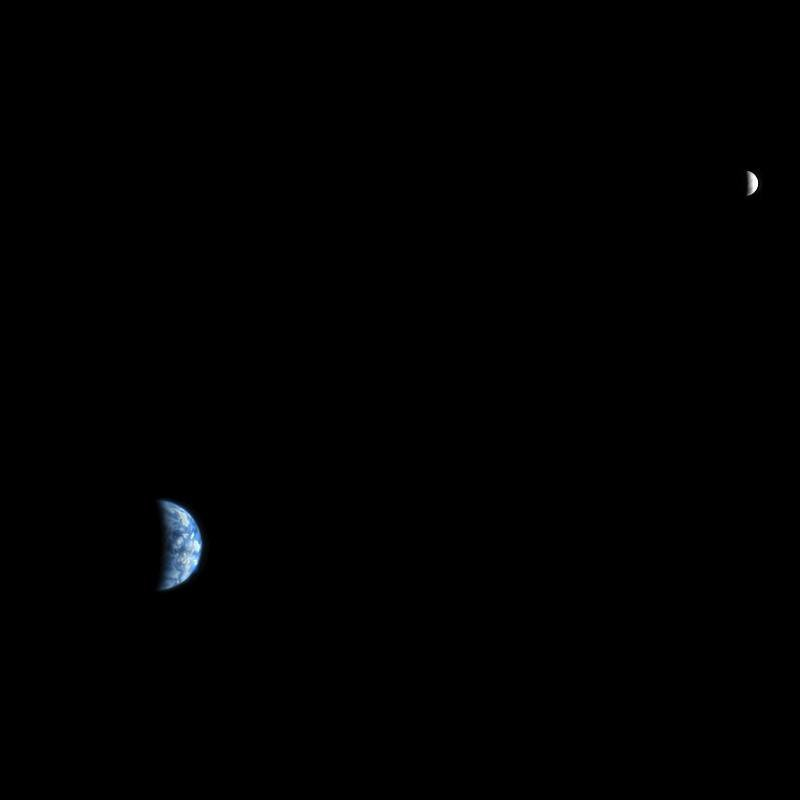
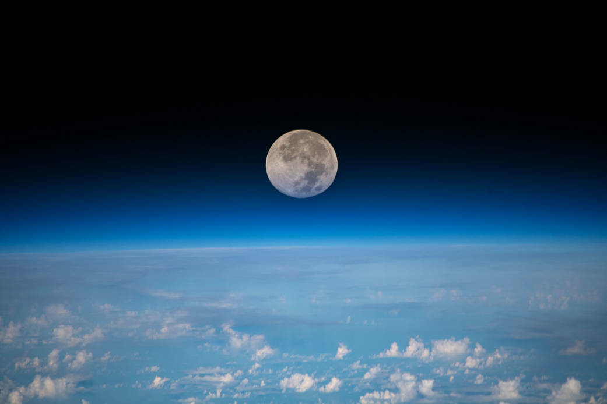
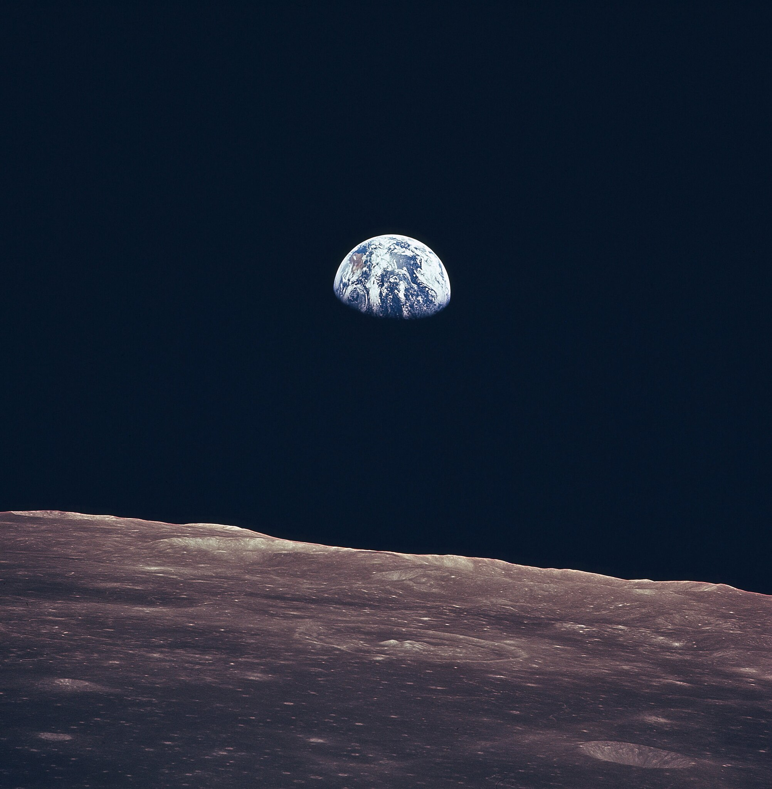
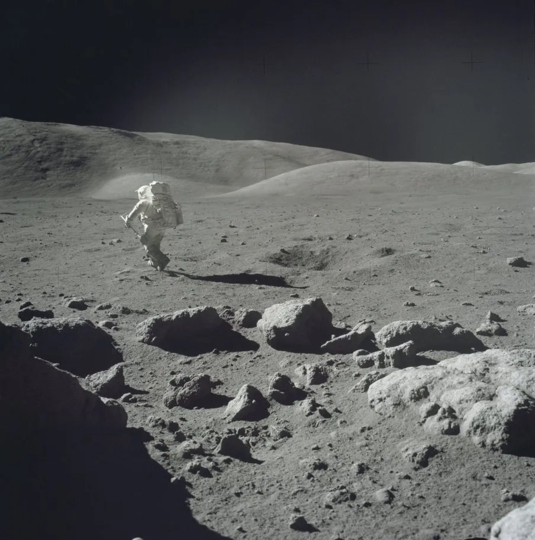
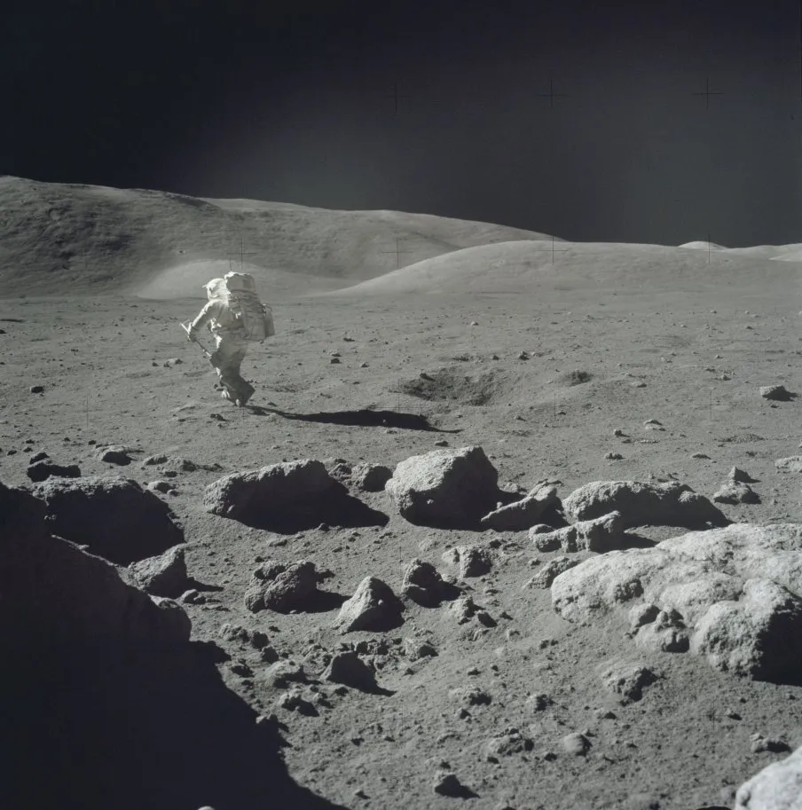
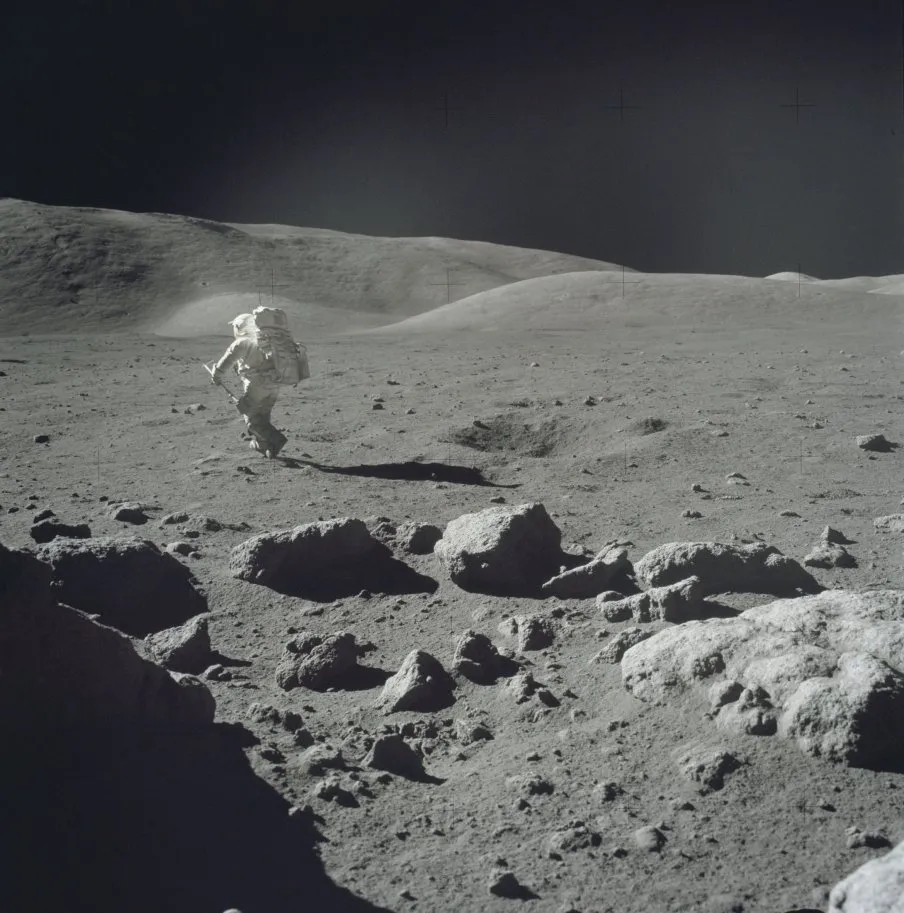

Lunar Gallery
Photos of Our Sky's Companion
Our Moon's History
|
Landing Site (Main Page)
Click Here to See More Images!
Telescope Observations of the Moon
Credit: Bryan Briones
 
Spacecraft Observations of the Moon
  
Observations on the Moon's Surface



 
